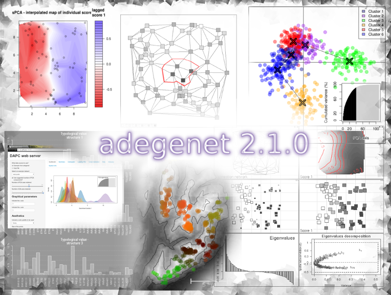

adegenet
is an  package dedicated to the
exploratory analysis of genetic data. It implements a set of
tools ranging from multivariate methods to spatial genetics and
genome-wise SNP data analysis.
package dedicated to the
exploratory analysis of genetic data. It implements a set of
tools ranging from multivariate methods to spatial genetics and
genome-wise SNP data analysis.
It is developed on Sourceforge by Thibaut Jombart, Caitlin Collins, Ismail Ahmed, Federico Calboli, Anne Cori, Tobias Erik Reiners, and Péter Sólymos, and officially released on CRAN periodically.
adegenet is described in the following publications:
Main features of adegenet are:
Maintainer: Thibaut Jombart (website)
Developers: Thibaut Jombart (tjombart@imperial.ac.uk), Caitlin Collins (caitiecollins@gmail.com), Ismaïl Ahmed (ismail.ahmed@inserm.fr), Federico Calboli (f.calboli@imperial.ac.uk), Anne Cori (a.cori@imperial.ac.uk), Tobias Erik Reiners (Tobias.Reiners@Senckenberg.de), Péter Sólymos (solymos@ualberta.ca)
Contributors (datasets/ideas): Christophe Fraser, Katayoun Moazami-Goudarzi, Denis Laloë, Francois Balloux, Dominique Pontier, Daniel Maillard
Suggestions, comments and contributions are most welcome!
package dedicated to the
exploratory analysis of genetic data. It implements a set of
tools ranging from multivariate methods to spatial genetics and
genome-wise SNP data analysis. It is developed on Sourceforge by Thibaut Jombart, Caitlin Collins, Ismail Ahmed, Federico Calboli, Anne Cori, Tobias Erik Reiners, and Péter Sólymos, and officially released on CRAN periodically.
adegenet is described in the following publications:
- Jombart T. (2008) adegenet: a R package for the
multivariate analysis of genetic markers. Bioinformatics 24: 1403-1405. doi:
10.1093/bioinformatics/btn129 [link
to a free pdf]
- Jombart T. and Ahmed I. (2011) adegenet 1.3-1: new tools for the analysis
of genome-wide SNP data. Bioinformatics.
doi: 10.1093/bioinformatics/btr521 [link
to
the bublisher's website]

sPCA, DAPC,
typological coherence of markers, Monmonier
algorithm, ...
Main features of adegenet are:
- data representation (classes) suitable for multivariate analysis
- data import from GENETIX, STRUCTURE, Genepop, Fstat, Easypop, or any dataframe of genotypes
- data import from aligned DNA sequences to SNPs
- data import from aligned protein sequences to polymorphic sites
- data export to the R packages genetics, hierfstat, LDheatmap
- handling of different levels of ploidy
- handling of codominant markersandpresence/absence data
- basic and advanced data manipulation
- basic data information (heterozygosity, numbers of alleles, sample sizes, ...)
- HWE and G-statistic tests, F statistics implemented for adegenet objects
- computation of genetic distances
- computation of pairwise Fst
- simulation of hybridization
- methods for spatial genetics: sPCA, tests for global and local structuring, Monmonier algorithm
- the seqTrackalgorithm for reconstructing genealogies of haplotypes
- simulation of genealogies of haplotypes
- Discriminant Analysis of Principal Components (DAPC)
- efficient genome-wise SNP data handling and analysis
- extraction of SNPs from genomic alignments
- graph-based clustering of genomic data
- identification of mutations between pairs of sequences
- visualization of SNPs density and test for the
randomness of their distribution

- web interface for DAPC, including feature
selection and cross validation
Maintainer: Thibaut Jombart (website)
Developers: Thibaut Jombart (tjombart@imperial.ac.uk), Caitlin Collins (caitiecollins@gmail.com), Ismaïl Ahmed (ismail.ahmed@inserm.fr), Federico Calboli (f.calboli@imperial.ac.uk), Anne Cori (a.cori@imperial.ac.uk), Tobias Erik Reiners (Tobias.Reiners@Senckenberg.de), Péter Sólymos (solymos@ualberta.ca)
Contributors (datasets/ideas): Christophe Fraser, Katayoun Moazami-Goudarzi, Denis Laloë, Francois Balloux, Dominique Pontier, Daniel Maillard
Suggestions, comments and contributions are most welcome!